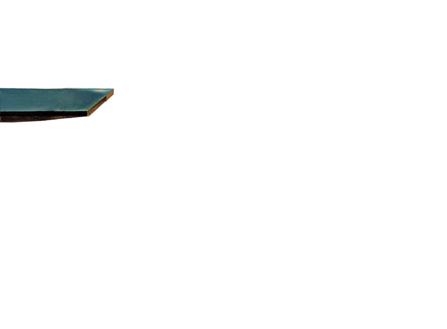

Dalí 2.5D



La persistencia de la memoria (1931)
© 2005 Salvador Dalí, Gala-Salvador Dalí Foundation/Artists Rights Society (ARS), New York.
Bildbearbeitung mit GIMP, Programmierung in HTML, CSS, PHP und JavaScript (jParallax: eine jQuery-Bibliothek von Stephen Band).
2012, Roland Bruggmann.
2012, Roland Bruggmann.